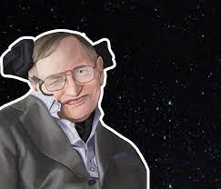
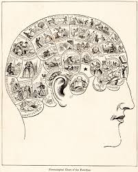

-
Hawking
A importância de Stephen Hawking para o conhecimento do universo
-
Fim do Universo
Como o Universo pode acabar
-
Pseudociências
Os males das pseudociências e o charlatanismo
-
Mulheres na Ciência
Mulheres na ciência e como a religião atrasou sua inserção
-
Papel do Estado
O papel do Estado como promotor da igualdade e da ciência